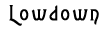

Karlien van den Beukel
Working Note
The poems published in this issue of HOW2 are from a group of poems with the working title “Balletomania.” The poems are inspired by talking with those who were part of the 1930s and 1940s London ballet circle. It is said that Arnold Haskell, who was part of that circle, introduced the nineteenth-century Russian term “balletomane” into the English language.
The light lets itself fall
on the Thames
like the Monet repudiation
it is.
Its body abrupted
from marriage, vocation and Westminster
reflects momentarily
on the state it’s in
& then is gone.
How light loses its lilac plumes
rushing after the cart
of great ideas
with such aplomb
it recommends you
to misery:
like real rain.
The inexorable sound of glass & cinders
stretched itself out - you have heard it before -
a discursive valency
across the Embankment
released its identikit on the foreshore.
The amateurs running their hand down
the fetlock to unground the iron
shoe
read the light going by the wayside
the light to waterlily,
white lit lilies in the water,
and into iron lilies,
as due to you,
your doing
those rounds.
O, I like the big picture,
but I don’t like having to make up
what happened
in the daily before me
these metempsychotic lilies, a serial
gross ineptitude -
that sudden bewilderment of line when
the use-rhythm strikes
one as odd
behind the curve, the traindoor closed,
the feet mismanaged into
cabriole en arrière en troisième arabesque
excuse my French
but now none of that circuit board will work.
Not that those who modeled the austerity
of their cognition on the prima assoluta
partook in this industrial philosophy—
that basic circuit, the routine transmitting
the status of who we are to ourselves,
proprioceptive, then, and others causal
to our relation with the everyday disappear,
and what we do have in hand tells us so,
and tells others of this, when we go laden
with the heart-felt posy to some destination
which those transported also know to affect
important on ocassion, leaving the doors
so we don’t have to misspell its opening.
We had the this and the that
recorded in the stance of passersby,
each look and attitude that worked
the given into the face was taken
elsewhere and left to drift away.
When the memory imbues the later work with such impatience and regret
you wonder about
those Nymphéas,
and what awkwardnesses are smoothed
whether they are shock-absorbers, brake-pads,
resistors to the flow of things.
It is that dark entrance,
and I should just go change
the fuse, a sense of undertaking.
I didn’t want to see that, but I was
detailed to make light of her part in it.
Then, for the moment,
I should hold
back from lyric indictment.
I am no longer sure I did see the light
go to pieces on the water
so the air could come
to reason with its whistler,
nor that the sound gave itself
up to my pathetic detection—
what happened seemed not
that the line collected itself
so it could turn a cartwheel
as she went under the skirt
of the lilac-plumed horse,
nor that she had therefore
lost her shoe. As it so was
in the abruption one felt
but the shiver and took
to one’s chores before
the curtains were drawn.
Things
were drawn to our movement,
slowly, as we took the floor. O, we had
taken
to politics and other lovers before.
We took ourselves to it and it was
luminous now as then we kept our head
in
it, our foot light and our fingers clean.
Fling and rush we did, all
the mr muscle that has taken on form. Fling and
rush
we did, all the fairy that has he brunt.
Fling and rush we did, all
the things that have taken the biscuit, and
then
the brillo pad that took note of it.
That was our movement, as we took the floor.
What is there left to sigh for, left to limp to, left
to see,
when
light our head, our foot in it, our fingers clean?
Fling and rush we were all
the glade taken by Yeats. Fling and rush
we
did all of the lovers all over the place..
And the time it has taken the world,
flush we were with it, flush as we took to the floor
all
we had taken to politics and other lovers before.

Delirious with paraphrased hatred
for the simple historical put down
of it, the white columns around
foliaged squares, Belgravia gives
Rob a bad turn. Where daily tours
an obsession these portilicode vistas,
in memory of henchmarks & blind
folds;
that turn, the simple put down of it,
like civic salt on streets, the school
run, the post round, to me seems
natural, almost green, and white
the colour. Though not true, your
name has come to the attention
as a good opening under the political
light. Camelias are just gorgeous
so I let you have it, you were the best
* with your one-bit hands, your
two-tone shoes, your green-backs,
your back-handers, your maiden
aunts who said well I never gave
head to another man nor was made
to lose it. If lyric were unhampered
by the natural I would bring a fabulous
spread to the sink estate, for I know
the trade is yours and history my
elected interest in the mistake on
the surveillance tape — a number
of them were dealing as a metonymic
identity; but your face was erased
as if a trauma counsellor had had
a good go at it. Well, then, mansion
blocks arranged into its moment
proportional space; inside low down
the cello scroll rose &
a drum roll
stepped into the picture —
to announce, grandly, the half-lit arrival of veuve cliquot.
Like the foliage should be greenery
like the observed should be scenery
I’m not going to step to it,
dissolute in a bad doric mood,
one back, and then
tutu
leave it to
the tornado
coming through the clouds of civilised letters
pumping elbows in aviators and lagerfeld sweaters
I know where’ve you been;
dealing.
Give me the lowdown,
marshalling the facts, I was detailed
to my formal base:
the red curtain
desequinned at your behest
adored what was
thrown about
flame throwing my points
about to raze the ineluctable
to the ground
and so regain the opening
and when it impedimented me, it rose.
A mini linear libretto
eking
whatever one has to be mindful of
a choric identity
in the bones
a kinetic memory
of the doileyed frontage of a cakewalk
whatever that is,
something drawn by Marlene Dumas,
something ripped off a homeboy’s pad,
but
camelias,
unknown.
Give me the lowdown
the diminution of love
low down like reading
a poem
d’annunzio had left on the divan
at Il Vittoriale
for capitalism to lose a lot of interest in;
lowdown
each finger pressed to palm
in measure
flew off the red curtain
a fan of slush ‘n blur
and flush against that
I took it
and traversed
as if the air could still be traversed
with the torque of tulle
Ione dead the long year.
Did take that
pause as birthright
a voluble little breath
gautier incensed it
again
too generous
the airs I gave
to my punctuation,
like so many occasional commas
the rat’s foot,
the rattle of the love-rat’s foot,
eking & eking
in the orchestral pit.
And reading all about it
your maiden aunts said
well I never, well I never
corrupted like she did.
Bio: Karlien van den Beukel lives in London. Her poems have appeared in Angel Exhaust, Talus and the anthology Foil: Defining Poetry 1985-2000. With Lucy Sheerman, she is co-editor of rempress, the Cambridge-based poetry imprint which has published Beth Anderson, Lisa Jarnot, Fiona Templeton, Jennifer Moxley, Caroline Bergvall and others.